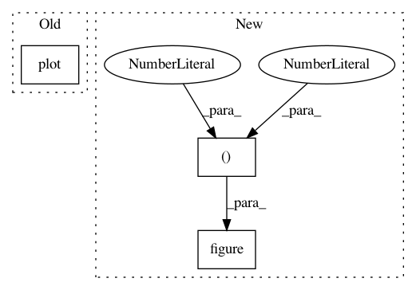

e7cfb8e1dc63ab964a119af296a090e82245321e,doc/source/notebooks/tailor/external-mean-function.pct.py,,,#,219
Before Change
(_, _), (Xs, F) = test_task
pred = test_models[i].predict_f(Xs)
plt.figure()
plt.plot(Xs, pred[0], label="Predictions")
plt.plot(Xs, F, label="Ground Truth")
mse = mean_squared_error(F, pred[0])
mean_squared_errors.append(mse)
plt.title(f"Test Task {i + 1} | MSE = {mse}")
After Change
// %%
mean_squared_errors = []
for i, test_task in enumerate(test):
plt.figure(figsize=(8, 4))
(train_X, train_Y), (Xs, F) = test_task
pred_mean, pred_var = test_models[i].predict_f(Xs)
plt.plot(Xs, pred_mean, label="Prediction mean", color="blue", linewidth=2)
plt.fill_between(
In pattern: SUPERPATTERN
Frequency: 3
Non-data size: 3
Instances
Project Name: GPflow/GPflow
Commit Name: e7cfb8e1dc63ab964a119af296a090e82245321e
Time: 2020-04-07
Author: christabella.irwanto@gmail.com
File Name: doc/source/notebooks/tailor/external-mean-function.pct.py
Class Name:
Method Name:
Project Name: statsmodels/statsmodels
Commit Name: 883cee17114c35a597351b7cc0f1b7e040352d54
Time: 2020-02-28
Author: samuel.scherrer@posteo.de
File Name: statsmodels/tsa/tests/test_holtwinters.py
Class Name: TestHoltWinters
Method Name: test_simulate
Project Name: geomstats/geomstats
Commit Name: 2a07ace76a6c93ec0519419bd4e37fd88b3c0217
Time: 2018-02-02
Author: ninamio78@gmail.com
File Name: examples/plot_geodesics.py
Class Name:
Method Name: main